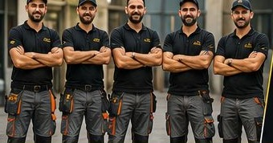
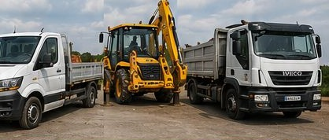

🚜 Miniexcavator & Basculantă
⚡ Intervenție Rapidă
✅ Se emite Factură
📍 Servicii disponibile în tot Județul Tulcea
EXCAVĂRI, DEMOLĂRI & TRANSPORT MOLOZ
Ai nevoie de săpături precise, nivelare de teren, demolări structuri sau debarasare rapidă? Venim cu utilaje profesionale direct pe șantierul tău. Fără întârzieri, fără scuze.
Sau trimite direct detalii pe WhatsApp folosind butonul verde.
Servicii
Excavator
- Săpături
- Demolări
- Fundații
- Șanțuri
- Încărcare materiale
- Amenajări terenuri
- Ridicăm moloz
Ce facem, concret
Săpături
Demolări
Șanțuri
Încărcare
Amenajări
Serviciile noastre
Demolări case, anexe, magazii, clădiri
Debarasări moloz și deșeuri
Transport gunoi și moloz
Mobilă veche și electrocasnice
Curățenie curți și grădini
Tuns gazon și întreținere
Tăiere și toaletare pomi / copaci
Curățare și amenajare terenuri
Încărcare și transport
Transport lemn / scândură și materiale
Oferim servicii de
- Demolăm magazii, case, clădiri etc.
- Debarasări gunoi, moloz, dărâmături, uși și ferestre
- Colectăm mobilă și electrocasnice
- Transportăm lemne și scândură veche
- Curățăm case de lucruri și obiecte vechi
- Amenajăm și curățăm terenul

Echipa noastră
Suntem o echipă cu experiență
Dispunem de mașini personale pentru transport și toate sculele necesare pentru orice tip de lucrare.

Zonă de acoperire
Intervenim în:
Tulcea
Mihail Kogălniceanu
Somova
Cataloi
Agighiol
Murighiol
Babadag
Măcin
Isaccea
Nufăru
și toate localitățile din județ